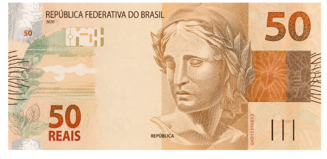

As músicas que te ajudam contra qualquer enfermidade é sua agora, eu estou pagando R$ 50 reais do meu próprio bolso para você ter acesso a esse milagre.

Quais músicas dos anjos você vai receber:
Como a música dos anjos funcionam:
A bíblia diz em Salmos 22 que Deus habita no meio dos louvores e que realiza milagres por meio das músicas.
As músicas são usadas para receber a presença dos anjos que nos livram do mal, você lembra desse versículo:
Atos 16:25-26: Perto da meia-noite, Paulo e Silas oravam e cantavam hinos a Deus, e os outros presos os escutavam. De repente, houve um terremoto tão violento que os alicerces da prisão foram abalados. Imediatamente todas as portas se abriram, e as correntes de todos se soltaram.
Veja o que esse versículo em salmos diz:
Salmo 147: Louvai ao Senhor, porque ele sara os quebrantados de coração e liga-lhes as feridas.
Por meio das músicas as CURAS ACONTECEM.
Por isso você precisa das músicas certas para receber o seu milagre.
Com ajuda dos anjos, conseguimos separar as músicas que resolvem qualquer problema. Toque no botão abaixo para acessar agora mesmo as MÚSICAS DOS ANJOS.